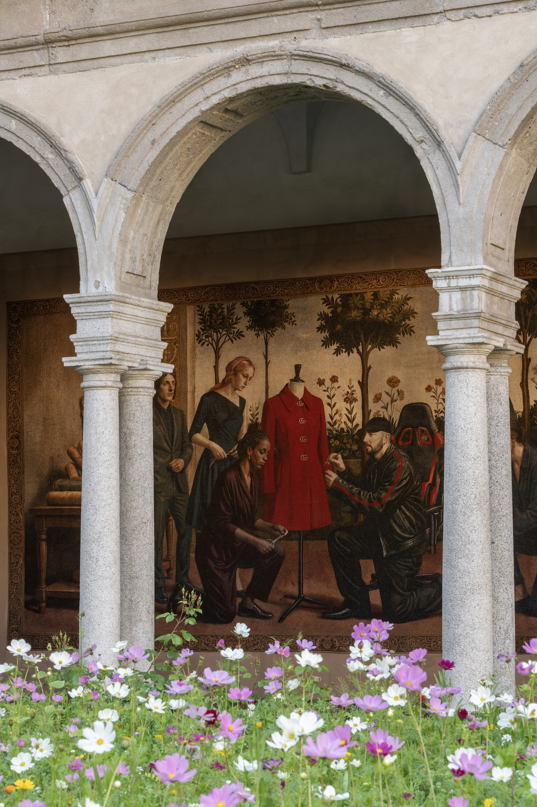

A fifteenth-century cloister in Brera has spent this Fuorisalone week pretending to be a museum of itself, and Demna has supplied the wall text. Twelve woven panels hang along the arcades of the Chiostri di San Simpliciano, narrating Gucci's hundred-and-five years in the voice of a designer who has clearly read the room.
Memoria, the Italian word, carries a heavier weight than its English cognate; it is closer to remembrance than to memory, the kind of word a grandmother uses about a holy day. That is the register Demna is working in. Open to the public Tuesday through Sunday, the installation is the first thing the Georgian designer has staged outside a runway since taking Gucci, and it answers a question almost no one bothered to ask. What does it look like when a house with a Florentine biography lets a properly heretical designer write the official chronicle? On the evidence of a Wednesday afternoon walk through the cloister, something halfway between a book of hours and a Wikipedia entry rendered in wool and silk.
From a London bellboy to a Brera cloister
The narrative begins not in Florence but in London. Guccio Gucci, working as a porter at the Savoy Hotel in the late nineteenth century, watched the Edwardian travelling classes load and unload their leather trunks and decided there was a business in supplying them. He went home and, in 1921, opened a shop on Via della Vigna Nuova. The first tapestry treats that origin the way a Quattrocento workshop would have treated an Annunciation, with a calm horizontal composition and a sense that the everyday detail depicted is in fact the founding moment of a civic identity.
From there the panels move through the canon: the Bamboo 1947, born of a postwar leather shortage when an artisan bent a length of cane over a flame; the Fifties Constance, rebaptised the Jackie 1961 after Mrs Onassis carried it through enough airports to make the rename a tax on history; the Tom Ford years, with their crimson velvet; the gentler Frida Giannini decade; the Alessandro Michele period, treated more reservedly than I expected; the brief Sabato De Sarno tenure before Demna's arrival.
The Botticelli alibi
In an Instagram letter ahead of February's runway, Demna described going to the Uffizi specifically to look at Botticelli's Primavera, the painting that lent Gucci's Flora print its botanical vocabulary. On the way he came across The Birth of Venus and, by his own account, was undone by it. The episode reads as a conversion narrative, the Georgian outsider standing in front of the Florentine canon and recognising the scale of what he had inherited.
You can see that conversion working through Memoria. The tapestries read, at first glance, as faithful Botticellian compositions. On second glance, anachronisms rise like ink in water. A leather gaming chair sits in the corner of one tableau. Demna himself walks into another in a baseball cap and biker jacket, perfecting the cut of the red coat from his S/S 2026 collection. A vending machine glints, almost out of frame, in a third. None of it reads as a joke at the source's expense. It reads as someone testing whether the source is robust enough to absorb the present, and concluding that it is.
Memoria is not a heritage project. It is a designer publicly inheriting a house, and choosing to do that in front of the only audience whose opinion really matters — the city of Milan, in the week when Milan is most itself.
Sienna CaldwellA Flora, replanted
The cloister itself has a hand in the staging. San Simpliciano is one of the earliest Renaissance enclosures in Milan, and its quiet order of arches handles a busy contemporary intervention better than the city's grander venues would. In the central courtyard, Demna and his team have planted a temporary garden styled after the Flora print, the motif Vittorio Accornero designed in 1966 for Grace Kelly after she visited the Gucci flagship on Via Montenapoleone. The original contains forty-three botanicals, all lifted from Primavera. The garden is a recreation in living tissue, seasonal wildflowers chosen to bloom for the run of the show.
By pulling the Flora out of the archive and back into actual soil, Demna reminds a visitor that the print was always meant to be in motion. Kelly wore it as a scarf because the silk caught the wind from a convertible. The cloister garden returns the design to the medium it was supposed to live in, which is air.

A detail from the Memoria tapestry cycle. Photography by Alessandro Saletta, courtesy of Gucci.
Vending machines and holy water
If the tapestries are the thesis, the Gucci-branded vending machines tucked into the lateral arcades are the punchline Demna has always insisted on attaching to his theses. They dispense soft drinks branded after the archetypes he introduced in his debut collection, La Famiglia: Fashion Icon, Drama Queen, Super Incazzata (Super Pissed Off), Mega Pesantone (Massive Buzzkill). The cans are real, the recipes by Gucci Giardino in Florence, and they are dispensed at random, an act of liturgical chance more than a marketing exercise.
Some observers will dismiss the vending machines as gimmickry. They will be wrong, in the boring way that observers of Demna's work have been wrong since 2015. The machines do exactly the work the tapestries cannot. They puncture the reverence and keep the cloister from sliding into the kind of corporate hagiography other houses produce when asked to commemorate a centenary. They allow Memoria to stay light enough to feel like an opinion rather than a press release.
What the house said back
Demna arrived at Gucci into a moment when the house's commercial fortunes have wobbled, after a creative direction that had rotated more often than the archive would prefer. His February runway, with its marble museum set and 3D-scanned Hellenistic statuary, argued that the brand needed to sit inside Italian culture rather than alongside it. Memoria is the gentler, more domestic version of that argument. The runway was the oration. The cloister is the family album.
Whether the commercial repositioning will work is a separate question, and one fashion writers, this one included, have been wrong about often enough to be cautious. What is true is that Demna has taken seriously the most underused asset Gucci had, which is its own history. He has done so in a setting Milan has lent him, in the week when the city is most attentive to design statements. On Sunday evening the tapestries come down; the flowers from the cloister garden will be handed out as bouquets at the Via Montenapoleone store.
What remains is the proposition that Gucci is, in Demna's reading, a Florentine house with a Georgian editor and a London origin story, and that none of those facts cancel one another out. For one Fuorisalone week in Brera, that proposition was hung on the walls in twelve careful, slightly funny pictures. It was, by some distance, the smartest thing in Milan this week.